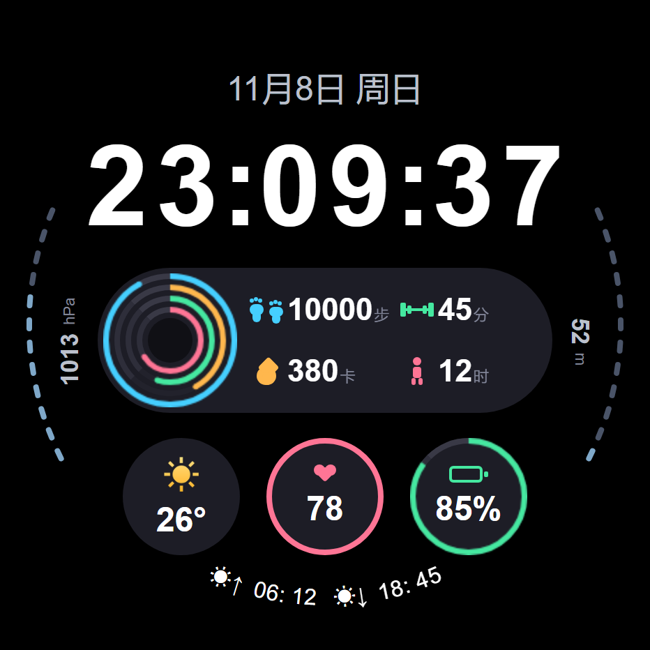
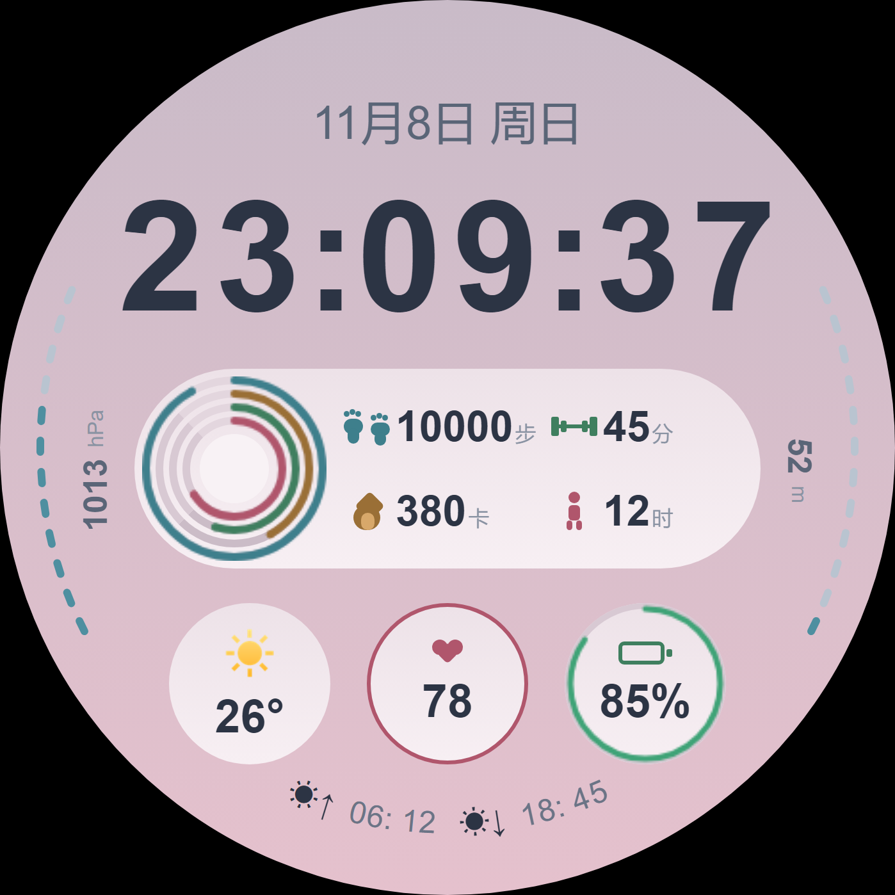
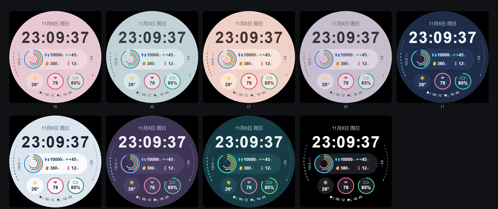

为 vivo / iQOO 蓝河（BlueOS）圆表设计的数字表盘。以低饱和深海色打底、单一强调色提亮， 把步数、活动、热量、站立四项数据压进一枚悬浮胶囊，四环进度全部用真实圆弧绘制。 设计基准 466×466，支持九套配色切换与 AOD 常亮。


步数 / 活动时间 / 热量 / 站立四层进度环用 canvas 的 arc 绘制，不是分段矩形拼的折线， 任意百分比下外缘都是正圆；相邻环留 4px 净间隙，四层不粘连。
左侧气压、右侧海拔沿表盘边缘以 12 段、−68°~−116° 的角度范围排布， 数值与刻度分离，读写不互相干扰；底部日出日落沿 R=201 弧线逐字旋转。
脚印、杠铃、火焰、立姿人四个图标与全部装饰均由样式绘制，不依赖图片资源， 也不使用 emoji 字符，避免手表端字库缺失渲染成方框。

墨黑 · 藕粉 · 雾青 · 粉米 · 灰紫 · 午夜靛 · 月白 · 雾紫暮 · 深海青 —— 点四环环心循环切换，配色随本地存储保留
独立表盘开发者，专注信息型数字表盘：把尽可能多的数据放进一眼能读完的层级里， 而不是靠装饰堆视觉。开发环境为 BlueOS Studio，作品均在自己的真机上完成渲染、功耗与 AOD 自查。
作品全部原创，图形与图标为自行绘制，不含第三方素材。